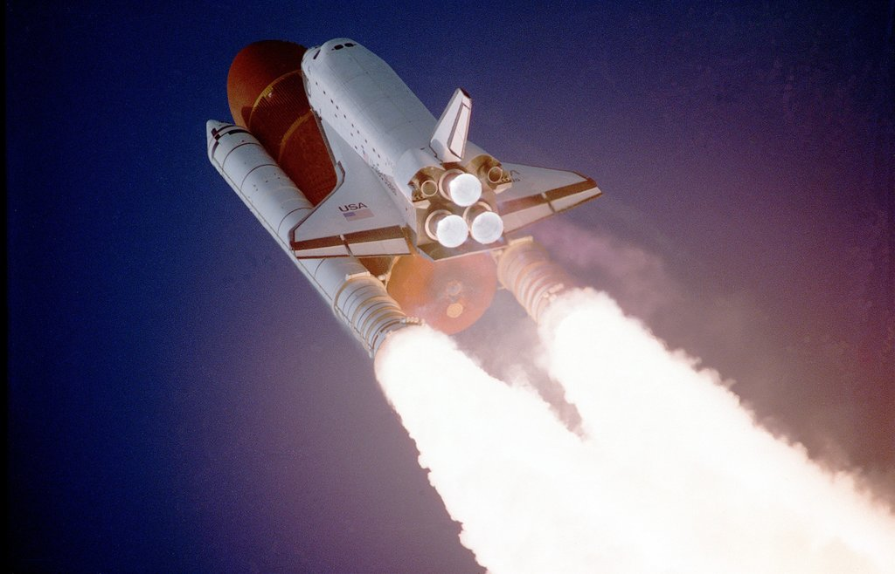

Do que são feitos os asteroides e como são formados?
Asteroides são rochas espaciais. Grandes como planetas ou pequenas como bolas de futebol, seja o tamanho que for, esses viajantes celestes são, basicamente, feitos de pedra, alguns silicatos, argila, diferentes metais e até mesmo, alegam certos especialistas, água.
Atualmente conhecemos mais de um milhão deles. Ainda assim, a massa somada de todos não chega à da nossa lua. Descubra mais sobre esses objetos espaciais fascinantes.
Os asteroides são corpos celestes muito interessantes e com características bastante variadas. Eles ocorrem em diferentes formatos. Muitos são irregulares, enquanto outros podem ser praticamente esféricos. Alguns inclusive têm buracos e crateras na superfície.
Uma parte viaja em órbitas elípticas ao redor do Sol e pode se chocar contra os planetas e luas. Outros estão confinados em dois grandes cinturões do nosso sistema: o principal entre Marte e Júpiter, e um ainda maior após do Netuno.
Como os asteroides se formam?
Há 4,6 bilhões de anos, uma enorme nuvem de gás e poeira espacial colapsou. A maior parte desse material se agrupou em um ponto de alta gravidade no centro da região, mas o resto ficou disperso ao redor.
Essa é a história de formação do nosso sol e do sistema solar. Aos poucos, a poeira espacial que não foi incorporada na estrela começou a aglomerar e deu origem aos planetas. Mas uma parte dos detritos sobrou e resta até hoje gravitando nas nossas vizinhanças.

Ciência
Foguetes: como surgiram e de que modo funcionam?
Qual é a composição de um asteroide?
A composição de um objeto espacial é determinada pelo seu espectro de emissão, que é capaz de identificar os elementos químicos presentes em uma substância a partir da luz que ela emite. Assim, a maioria dos asteroides pode ser classificada entre três tipos.
Tipo-C (condritos): formados de argila e silicato, são super comuns. De aparência escura, estão provavelmente entre os mais antigos a serem formados.
Tipo-S (pedregosos): ricos em silicato e níquel-ferro. Compreendem cerca de 17% de todos os asteroides conhecidos e são os mais densos.
Tipo-M (níquel-ferro): possuem a maior porcentagem de ferro na composição entre todos. Por outro lado, são os menos abundantes.
Classificação dos asteroides
Durante muito tempo, os asteroides desconcertaram astrônomos em todo o mundo. Até hoje não existe uma classificação oficial para o termo e a União Astronômica Internacional prefere o nome Corpos Menores do Sistema Solar para denominar tudo de tamanho inferior a um planeta.
Por isso, segundo alguns, o primeiro asteroide descoberto foi Ceres, em 1801. De início classificado como um planeta, o corpo está localizado no cinturão de asteroides e, hoje, é oficialmente denominado planeta-anão.
Outros grandes corpos na mesma região são Pallas e Vesta, considerados protoplanetas. O cinturão de asteroides agrupa a maioria daqueles que são conhecidos pelo homem, e foi formado por causa da grande gravidade exercida por Júpiter na região.
Os troianos são outro grande grupo desses objetos. Eles compartilham a órbita com um planeta maior, atraídos pela força gravitacional do grande objeto, sem nunca se chocarem com ele.
Isso pode gerar dois pontos especiais nas órbitas. Nesses lugares, a atração da gravidade exercida pelo planeta se equilibra com a do sol, e as rochas que passam por ali acabam ficando presas nessa região
Júpiter acumula a maioria dos troianos, mas Marte, Netuno e até a Terra possuem alguns companheiros de órbita.
Em 1977 foram descobertos novos habitantes nos confins do nosso sistema planetário. Chamados inicialmente de centauros, alguns especialistas questionam se esses corpos podem ser considerados asteroides.
A descoberta de um número particularmente grande deles no entorno do então planeta Plutão (hoje, planeta-anão), levou os astrônomos a classificassem a região como um novo cinturão, de Kuiper.
O local é o mais rico de rochas do nosso sistema e inclui outros planetas-anões como Orcus, Haumea, Quaoar e Makemake. Nessas regiões frias, as rochas espaciais são cobertas de gelo e por isso se assemelham a cometas.
Existem duas outras classificações importantes para os astrônomos. Asteroides Próxima à Terra são aqueles que orbitam pertinho de nós. E os geocruzadores são os que atravessam a nossa órbita.
Os cientistas monitoram com atenção especial esses últimos, porque representam um risco real de impacto com a Terra, podendo levar à catástrofes imensuráveis. O radar é o principal instrumento utilizado no sistema de vigilância do planeta.
Sobras abandonadas durante a formação do Sistema Solar, esses objetos não foram incorporados aos planetas atuais, e viajam pelo espaço, despertando a curiosidade e intrigando todas aqueles que ousam olha para o céu.